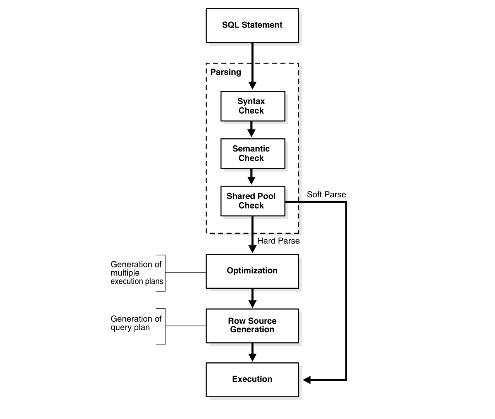

Oracle 关系数据库
Table of Contents
1 数据库概述
Oracle Database，又名 Oracle RDBMS，或简称 Oracle。是甲骨文公司的一款关系数据 库管理系统。它是在数据库领域一直处于领先地位的产品。可以说 Oracle 数据库系统是 目前世界上流行的关系数据库管理系统，系统可移植性好、使用方便、功能强，适用于各 类大、中、小、微机环境。它是一种高效率、可靠性好的、适应高吞吐量的数据库解决方 案。
1.1 数据库和实例
- 数据库 (Database) 指的是存放于磁盘中的一系列文件，数据库是独立于数据库实例
- 数据库实例 (Database Instance) 指定是用于管理数据库文件的一系列内存数据结
构。实例包含：
- SGA (System Global Area) 全局共享内存
- PGA (Program Global Area) 每个 Client 都有自己私有的会话内存
- Background Processes 后台进程
下图展示了 Oracle 的数据库和 Client Process 交互的细节

1.2 数据存储结构
数据存可以分成物理存储好逻辑存储两个部分，两者的联系见下图

物理存储结构当执行 CREATE DATABASE 时，下面的文件将被创建
- 数据文件 (Data Files) 包含所有的数据库的数据，数据的逻辑结构例如表、索引 都是存储在数据文件
- 控制文件 (Control Files) 包含物理结构的一些元信息，例如：数据库名称和数据 库文件的路径
- 重做日志 (Online Redo Log Files) 包含重做的日志文件，每个重做日志由一系列 的 Redo Entires (也被称为 Redo Records)组成
- 还一些其他的物理文件 例如：Parameter Files, Diagnostic Files, Backup Files, Archived Redo Log Files 等
逻辑存储逻辑结构是存储在一系列 Data Blocks 中
- 块 (Data Blocks) 由定长字节的文件组成的二进制文件
- 区 (Extents) 由定长的逻辑连续 Data Blocks 构成。Extends 一次性分配，用来 存储特定类型的信息
- 段 (Segments) 由一系列的 Extents 构成，可以对应一些用户的对象，例如：表、 索引、Undo Data 和 Temporary Data
- 表空间 (Tablespace) 一个 Database 被分成多个逻辑的 Tablespace 单元。 Tablespace 是 Segments 的逻辑容器。
1.3 数据库实例结构
数据库实例是使用内存数据结构和进程来管理数据库，当应用需要连接数据库时，它将 会首先连接到一个数据库实例中
1.3.1 Oracle 数据进程
Oracle Processes 包括 Server Processes 和 Background Processes。大多数情况下， Oracle Processes 和 Client Processes 运行在不同电脑中。 Oracle 数据库在启动 时会启动一系列的数据库实例
- Client Processes 用来运行软件或 Oracle 工具，大部分运行环境是在不同电脑上
- Background Processes 用来处理多个 Oracle 数据库程序，可以进行异步 I/O 或者 监控其它 Oracle 数据库。
- Server Processes 和 Client Processes 与 Oracle 数据库交互，用来完成处理请求
1.3.2 实例内存结构
- SGA 是包含一个数据库实例的数据和控制信息的一组共享内存的。例如：SGA 包含 Cached Data Blocks 和 Shared SQL Area
- PGA 是包含一个 Background Processes 和 Server Processes 实例的数据和控制信 息的一组内存区域
2 关系数据库结构
2.1 数据库和表
2.1.1 创建表
create table [scmname.]tabname ( colname dbtype [not null | null] [default default_value] [primary key] );
- Oracle 数据库中
scmname,tabname, 和colname不加引号默认大写，即使 使用小写的名称也会自动转成大写。如果非要使用小写需要使用单引号将名称包起来 - Oracle 一张表最多只能有 254 列
- dbtype 是数据类型，Oracle 数据库中常见的有 number, varchar2, date，布尔型一
般使用
char(1)或number(1)来模拟
简单的用户表创建
create table users ( id number(16) primary key not null, created_by varchar2(64) default 'sysman' not null, updated_at date default sysdate not null, valid char(1) default 'y' not null, -- code rule and type code varchar2(32) unique not null, name varchar2(32) ); comment on column users.code is '用户编号, 用于登录'; comment on column users.name is '用户名字, 用于显示';
2.1.2 数据类型
- 数值型
number(precision[,scale]): 数值型，用于表示整数和实数。 precision 表示 精度，scale 表示数值范围。precision 的取值范围为 1 到 38，scale 的取值范 围为 -84 到 127。一句话： precision 是总的数字位数， scale 是小数点后的数 字个数
- 字符串
varchar2(size[byte|char]): 变长字符串类型，size 表示字符串最大长度，单 位可以是 byte 或 char。 size 的取值范围为 1 到 4000。单位 byte 表示所用的 字节数，单位 char 表示所用的字符（character）数nvarchar2(size): 边长 unicode 编码字符串类型，AL16UTF16字符编码的 byte 数是utf8字符编码的三倍，所以 nvarchar2 的 size 取决于具体的编码 集。size 的取值范围为 1 到 4000char(size[byte|char]): 定长字符串类型，size 的取值范围是 1 到 2000 。 单位 byte 和单位 char 语义一样都是表示字符（character）数long: 2gb 的超长字符串。 每张表只允许一列是 long 类型
注意 数据库中的
char存储时每个字段大小占用的字节数是固定的,varchar2存储时暂用的字节是变化的。两者使用的场景不同，对于使用字符串固定长度的，例 如：valid 字段,'y'表示合法,'n'表示不合法，可以使用char来存储， 这样访问速度快；大部分的场景：字符串长度是不确定的，而且变化比较大，这时最 好使用varchar2来存储，这样节约存储空间 - 时间/日期类型
date: 时间和日期类型。 Oracle 的时间和日期都用 date 类型表示， 默认的 时间格式字符由NLS_DATE_FORMAT参数决定，它是'DD-MMM-YY'格式，例如:'13-OCT-92','07-JAN-98'
- 二进制 Lob
clob: 最多可以存储 4GB 的数据字符的大对象（Character Data of Large Object）blob: 最多可以存储 4GB 数据的二进制大对象（Binary Large Object）
2.1.3 修改表结构
-- 添加一列 alter table tabname add colname varchar2; comment on column tabname.colname is 'comments'; alter table t_employee_base add column is_active char(1) default 'n'; comment on column t_employee_base.is_active is '用户是否激活，默认为 n，表示未激活'; -- 删除一列 alter table tabname drop column colname; -- 添加主键 alter table tabname add primary key ("pk_name"); -- 重命名列 alter table tabname rename column oldcol to newcol;
2.1.4 查看所有表
-- 查看当前数据库 select name from v$database; -- 查看所有表 select table_name from user_tables order by table_name; -- 查看所有表和视图，以及注释 select a.table_name || ' ' || a.comments from user_tab_comments a where a.table_type in ('table', 'view') order by a.table_name; -- 查看单个表结构 desc tabname;
2.1.5 临时表
临时表主要作用是保存事务或者会话的中间数据，所以一般包含事务级别的和会话级别 的临时表
- 事务级临时表
on commit delete rows当 COMMIT 的时候删除数据（默认情况） - 会话级临时表
on commit preserve rows当 COMMIT 的时候保留数据，当会话结 束删除数据
create global temporary table tabname ( id number ) on commit delete rows;
Oracle 的临时表创建完就是真实存在的，无需每次都创建。 删除临时表和删除普通表 一样
drop table tabname; truncate table tabname;
2.1.6 其它
- Oracle 表默认存储结构是堆 (Heap)
- Oracle 的空值 NULL 不同于字符串，空值在数据库中的存储方式有以下两种：
- 如果 NULL 在两列之间，需要一字节来存储，一般是 ASCII 码 Zero 值
- 如果 NULL 位于行末端，一般默认不存
2.2 索引
索引 (Index) 是数据库的可选的一种数据结构，主要用处是加速数据存取
2.2.1 创建索引
-- 单行索引 create index idxname on tabname(colname); -- 组合索引 create index idxname on tabname(colname1, colname2);
2.2.2 修改和删除索引
-- 重建索引：如果经常在索引列上执行 dml 操作，需要定期重建索引 alter index idxname rebuild; -- 删除索引 drop index idxname;
2.2.3 索引类型
- B-tree Indexes 适合与大量的增删改 (OLTP)
- Bitmap and Bitmap Join Indexes 适合与决策支持系统，做 Update 代价非常高
Funtion-based Indexes 经常对某个字段做查询的时候是带函数操作的
-- 函数索引 create index emp_name_upper_ix on emp (upper(name));
- Application Domain Indexes
2.3 分区，视图，序列等
2.3.1 分区
分区指的是对数据量较大，访问速度较慢的表进行分成几个子区域进行管理。分区表包 含 一个或多个 分区，注意包含一个分区的分区表和不分区表是不同的，包含一个分 区的分区表可以添加新的分区，而不分区表却不能添加新的分区。
分区主要包含以下要素
- 分区键 (Partition Key)
- 分区策略 (Partition Strategies)，常见的分区有一下几种
- 基于范围的分区 (Range Partition)
- 基于列表的分区 (List Partition)
- 基于哈希的分区 (Hash Partition)
2.3.2 创建分区表
创建分区表主要是在 create table 语句后面加 partition by 来说明分区策略
基于范围的分区表
create table time_range_sales ( prod_id number (6), -- 产品 ID cust_id number, -- 顾客 ID time_id date, -- 时间 ID channel_id char(1), -- 渠道 ID promo_id number(6), quantity_sold number (3), amount_sold number (10, 2) ) partition by range (time_id) ( partition sales_1998 values less than (to_date('1999-01-01', 'YYYY-MM-DD')), partition sales_1999 values less than (to_date('2000-01-01', 'YYYY-MM-DD')), partition sales_2000 values less than (to_date('2001-01-01', 'YYYY-MM-DD')), partition sales_2001 values less than (maxvalue) );
基于列表的分区表
create table list_sales ( prod_id number (6), -- 产品 ID cust_id number, -- 顾客 ID time_id date, -- 时间 ID channel_id char(1), -- 渠道 ID promo_id number(6), quantity_sold number (3), amount_sold number (10, 2) ) partition by list (channel_id) ( partition even_channels values (2, 4), partition odd_channels values (3, 9) );
基于哈希的分区表
create table hash_sales ( prod_id number (6), -- 产品 ID cust_id number, -- 顾客 ID time_id date, -- 时间 ID channel_id char(1), -- 渠道 ID promo_id number(6), quantity_sold number (3), amount_sold number (10, 2) ) partition by hash (prod_id) partitions 2;
2.3.3 分区索引
分区表和不分区表建索引也是不同的。分区表的索引包含全局索引 (Global Indexes) 和局部索引 (Local Indexes)。局部索引根据局部索引策略的不同又分成了 Local Prefixed Indexes 和 Local NonPrefixed Indexes 两类
对于索引有以下几个注意点：
- 分区的列必须是主机列的一个子集
- 第二分区索引可以进行局部分区或者全局分区
- 溢出的数据会被均分到各个分区中，而不会堆积在某一个单独的分区
创建分区表的索引方法如下
-- 创建分区表的局部索引 create index hash_sales_idx on hash_sales (time_id) local; -- 创建分区表的全局索引 create index time_channel_sales_idx on time_range_sales (channel_id) global partition by range (channel_id) ( partition p1 values less than (3), partition p2 values less than (4), partition p3 values less than (maxvalue) );
2.3.4 视图
视图 (View) 也称虚表， 不占用物理空间，这个也是相对概念，因为视图本身的定义 语句还是要存储在数据字典里的。视图只有逻辑定义。每次使用的时候，只是重新执行 SQL，视图的好处如下：
- 提供各种数据表现形式， 可以使用各种不同的方式将基表的数据展现在用户面前， 以便符合用户的使用习惯 (主要手段: 使用别名)；
- 隐藏数据的逻辑复杂性并简化查询语句， 多表查询语句一般是比较复杂的， 而且 用户需要了解表之间的关系， 否则容易写错; 如果基于这样的查询语句创建一个视 图， 用户就可以直接对这个视图进行"简单查询"而获得结果. 这样就隐藏了数据的 复杂
- 执行某些必须使用视图的查询. 某些查询必须借助视图的帮助才能完成. 比如， 有 些查询需要连接一个分组统计后的表和另一表， 这时就可以先基于分组统计的结果 创建一个视图， 然后在查询中连接这个视图和另一个表就可以了
- 提供某些安全性保证. 视图提供了一种可以控制的方式， 即可以让不同的用户看见 不同的列， 而不允许访问那些敏感的列， 这样就可以保证敏感数据不被用户看见；
- 简化用户权限的管理. 可以将视图的权限授予用户， 而不必将基表中某些列的权限 授予用户， 这样就简化了用户权限的定义。
2.3.5 创建视图
简单的创建视图可以暴露源表的某些字段
create view staff as select employee_id, last_name, job_id from employees;
视图可以封装做一些对源表的数据处理
create view staff_dept_10 as select employee_id, last_name, job_id from employees where department_id = 10 with check option constraint staff_dept_10_cnst;
合并多个表，给用户暴露一个单一的表
create view staff_dept_10_30 as select e.employee_id, e.last_name, e.job_id, d.department_name from employee e, department d where e.department_id in (10, 30) and e.department_id = d.department_id;
2.3.6 物化视图
物化视图 (Materialized View) 将视图选取的数据进行存储，目的是减少构建视图时 的计算时间，用空间换时间
create materialized view sales_mv as select t.calendar_year, p.prod_id, sum(s.amount_sold) as sum_sales from times t, products p, sales s where t.time_id = s.time_id and p.prod_id = s.prod_id group by t.calendar_year, p.prod_id;
2.3.7 序列
序列可以生成连续的数，主要用于解决数据库并发访问时 ID 值生成策略
-- 创建一个序列 create sequence cust_seq start with 1000 increment by 1 nocache nocycle; -- 使用方法 select cust_seq.nextval from dual; -- 查看当前序列值 select cust_seq.currval from dual;
2.3.8 同义词
同义词定义了数据库结构的别名，可以方便访问。同义词分为 public 和 private 的 两种， public 对所有用户公开， private 针对特定用户
create public synonym people hr.employees;
2.4 数据完整性
数据完整性 (Data Integrity) 保证存储在数据库中的所有数据值均正确的状态
2.4.1 非空约束
非空 (NOT NULL) 约束限制数据库表列的值不能为 NULL，那么当插入数据时，必须为 列提供，数据不能为 NULL。约束只能在列级定义，不能在表级定义。
建表时指定在对应列后面添加 not null 指定该列为非空
create table employees ( id number(16) primary key, created_by varchar2(64) default 'sysman' not null, -- 指定当前列为非空 name varchar2(32) ); -- 给非空约束添加名称 create table employees ( id number(16) primary key, created_by varchar2(64) default 'sysman', name varchar2(32), constraint emp_created_by_uk(created_by) not null; -- 指定当前列为非空 );
修改列的非空属性
-- 添加非空约束 alter table tabname modify colname [constraint constraint_name] not null; -- 删除非空约束 alter table tabname modify colname null;
2.4.2 唯一性约束
唯一性 (Unique) 约束表示该列值是不能重复的，但是可以为 NULL
create table employees ( email varchar2 (25), constraint emp_email_nn not null, -- 非空 constraint emp_email_uk unique (email) -- 唯一键 ); -- 添加唯一键 alter table tabname add constraint emp_email_uk unique (email);
2.4.3 主键约束
用于唯一的标识表行的数据，当定义主键约束后，该列不但不能重复而且不能为 NULL。 一张表最多只能有一个主键，但是可以由多个 Unique 约束。创建主键或唯一约束后， Oracle 会自动创建一个与约束同名的索引 (Uniquenes 为 Unique 唯一索引) 需要注 意的是： 每个表只能有且有一个主键约束
create table employees ( id number (16) primary key, -- 主键约束 name varchar2 (32) ); create table employees ( id number (16), name varchar2 (32), constraint employee_pk primary key (id) -- 主键约束 );
2.4.4 外键约束
用于定义主表和从表之间的关系，外键约束要定义在从表上，主要则必须具有主键约束 或是 Unique 约束，当定义外键约束后，要求外键列数据必须在主表的主键列存在或是 为 NULL，即引用完整性 (Referential Integrity)。如果外键作用于当前表本身的列， 则该约束为自引用完整性 (Self-Referential Integrity)
用来维护从表 (Child Table) 和主表 (Parent Table) 之间的引用完整性。外键约束 是个有争议性的约束，它一方面能够维护数据库的数据一致性，数据的完整性。防止错 误的垃圾数据入库； 另外一方面它会增加表插入、更新等 SQL 性能的额外开销，不少 系统里面通过业务逻辑控制来取消外键约束。例如在数据仓库中，就推荐禁用外键约束。
修改外键时的从表行为有以下三种：
- No Action on Deletion and Update, 默认为删除和更新是不操作
- Cascading Deletion, 级联删除
- Deletion that Set NULL, 删除是置空
外键插入、更新或删除形容如下
| DML | 主表 | 从表 |
|---|---|---|
insert |
要求主表键唯一 | 要求外键值在从表中存在，或者包含多行，或者为 NULL |
update no action |
如果从表中没有没有引用主表的的行 | 如果更新后新的外键仍然引用旧的外键 |
delete no action |
如果子表中没有引用主表的行 | 任何情况都可行 |
delete cascade |
任何情况都可行 | 任何情况都可行 |
delete set null |
任何情况都可行 | 任何情况都可行 |
create table departments ( id number (16) primary key ); create table employees ( id number (16), dept_id number (16), -- 添加外键 constraint emp_dept_fk foreign key (dept_id) references departments (id) ); -- 修改表，添加外键 alter table employees add constraint emp_dept_fk foreign key (dept_id) references departments (id);
2.4.5 条件约束
条件约束 (check constraint) 用于强制行数据必须满足的条件
alter table employees add constraint max_emp_sal_ck check(salary < 10001);
2.4.6 约束命名规范
约束名称建议自己定义一套命名规则，否则使用系统生成的约束名，很难能把它和对 应的表、字段联系起来。
| 类型 | 命名 |
|---|---|
| 非空约束 | tabname_colname_nn |
| 唯一约束 | tabname_colname_uk |
| 主键约束 | tabname_pk |
| 外键约束 | tabname_colname_fk |
| 条件约束 | tabname_colname_ck |
| 默认约束 | tabname_colname_df |
如果约束名称超过 32 位长度，建议应该缩写表名，而不应用 tabname_colname_nn
不过具体视情况而定
2.5 数据字典和动态性能视图
2.5.1 数据字典
Oracle 的数据库组织方式中所有数据库的表信息，类信息等元信息也是存放在一个对 用户不可见的数据表中，这里称之为元表。Oracle 定义了一系列示例图来表示数据字 典，大体上有如下几种
| 前缀 | 用户可见性 | 内容 |
|---|---|---|
dba_* |
数据库管理员 | 所有的对象 |
all_* |
所有用户 | 当前用户可访问的对象 |
user_* |
所有用户 | 当前用户的对象 |
例如： user_tab_comments 表中存放着用户表的注释， dba_tab_comments 表中
则存放在管理员的所有表注释。
2.5.2 数据字典的使用
表列属性，可以查看表中每列的名字，数据类型，长度等信息
select c.table_name, c.column_name, c.data_type, c.data_length, c.nullable from user_tab_columns c order by c.table_name;
唯一性约束，获取列的约束名称
select c.owner, c.constraint_name, c.table_name, c.column_name, c.position from user_cons_columns c order by c.table_name;
获取列的约束类型
select c.constraint_name, c.constraint_type, c.status from user_constraints c where upper(c.constraint_type) in ('U', 'P') order by c.constraint_name;
获取数据库中的一些注释信息
-- 获取所有表注释 select c.table_name, c.table_type, c.comments from user_tab_comments c order by c.table_name; -- 获取所有表的对应列的注释 select c.table_name, c.column_name, c.comments from user_col_comments c order by c.table_name;
2.5.3 动态性能视图
Oracle 提供了一下可以查看当前数据库性能的视图，这些视图的统一前缀为 v$*
v$instance实例视图v$bgprocess后台进程视图v$sqlSQL 执行记录视图v$datafileData files 的视图
查看所有系统性能视图名称
select d.table_name from dictionary d where lower(d.table_name) like 'v$%' order by d.table_name;
查看数据库对象
-- 所有 dba_ 开头的数据库对象信息 select o.owner, o.object_name, o.object_type from dba_objects o order by o.owner, o.object_name; -- 所有 all_ 开头的数据库对象信息 select o.owner, o.object_name, o.object_type from all_objects o order by o.owner, o.object_name; -- 所有 user_ 开头的数据库对象信息select o.object_name, o.object_type from user_objects o order by o.object_name;
所有用户对象的多少和用户的角色相关，见如下的例子
SQL> set role all; Role set. SQL> select count(1) from all_objects; COUNT(1) ---------- 18474 SQL> set role none; Role set. SQL> select count(1) from all_objects; COUNT(1) ---------- 15267
3 数据存取
3.1 SQL 语句的分类
- DDL (Data Definition Language) 是数据定义语言
- DML (Data Manipulation Language) 是数据操作语言
- TCS (Transaction Control Statements) 是事务控制语句
3.2 DDL 语句
DDL 语句包括如下几类：
- 创建，修改和删除数据库对象的语句，大多数以
create,alter和drop开头 - 删除数据库对象中的所有的数据的语句，
truncate - 授权和取消权限的语句，
grant,revoke - 修改审计相关选项，
audit,noaudit - 添加注释到数据字典的语句，
comment
执行 DDL 语句相当于隐式提交事务, 常见的 DDL 语句如下：
create table plants ( plant_id number primary key, common_name varchar2(15) ); alter table plants add (latin_name varchar2(40)); grant select on plants to scott; revoke select on plants from scott; drop table plants;
3.3 DML 语句
DML 语句操作数据库已经存在的数据，主要有以下几类：
- 获取数据库表和视图中的数据
select - 将数据或子查询的数据插入表
insert - 修改表的数据值
update - 更新或插入列到表或视图中
merge - 删除表或视图中的列
delete - 查看执行计划
explain plan - 锁表或锁视图
lock table
select * from employees; insert into employees (employee_id, last_name, email, job_id, hire_date, salary) values (1234, 'Mascis', 'JMASCIS', 'IT_PROG', '14-FEB-2011', 9000); update employees set salary=9100 where employee_id=1234; delete from employees where employee_id=1234;
3.3.1 查询语句
Select 查询语句是最常见的 DML，并且大多数和数据库打交道的工作就是查数据，下面 是一个查询的例子
select email, department_name from employees join departments on employees.department_id = departments.department_id where employee_id in (100,103) order by email;
Join 类型有以下几种：
inner join内连接，默认连接方法，只有满足条件的才返回outer join外链接，外链接包括left outer join和right outer join， 外链接将一段的数据全量返回，如果不满足条件的补 NULL- 笛卡尔积，对待处理表的所有排列，即笛卡尔积进行返回
-- 左连接，如果有些员工没有部门 ID 对应的部门名称返回 NULL select email, department_name from employees left join departments on employees.department_id = departments.department_id where employee_id in (100,103) order by email; -- 笛卡尔积，返回所有员工和部门的排列 select employee_name, department_name from employees, departments order by employee_name, department_name;
3.3.2 子查询和隐式查询
如果一个查询包含在另外一个查询语句中，则该语句被称为子查询 (subquery)
select first_name, last_name from employees where department_id in (select department_id -- 子查询 from departments where location_id = 1800);
隐式查询指一些语句没有使用 select 关键字，但实际上执行了查询结果集
update employees set salary = salary * 1.1 where last_name = 'Baer';
3.4 TCS 语句
set transaction name 'Update salaries'; savepoint before_salary_update; update employees set salary = 9100 where employee_id = 1234; -- DML -- 这里回退了，上一句 DML 实际不会被提交 rollback to savepoint before_salary_update; -- 这里提交了，上一句 DML 才会生效 update employees set salary = 9200 where employee_id = 1234; -- DML commit comment 'Updated salaries';
3.5 SQL 优化器
Oracle 在执行 DML 语句时，不是直接将语句解析出来执行，而是生成相应的执行计划 (Execution Plan)， 根据生成的执行计划后，优化器就可以获取语句涉及到的执行信息，包括 query 条件，对应的存取 路径 (Access Path)，优化器最后生成一个高效的查询计划 (Query Plan)，最后执行查询
下面是一个查看语句执行计划的示例
SQL> set autotrace on SQL> select count(1) from t_department; COUNT(1) ---------- 26 Execution Plan ---------------------------------------------------------- Plan hash value: 3597430146 ---------------------------------------------------------------------------- | Id | Operation | Name | Rows | Cost (%CPU)| Time | ---------------------------------------------------------------------------- | 0 | SELECT STATEMENT | | 1 | 1 (0)| 00:00:01 | | 1 | SORT AGGREGATE | | 1 | | | | 2 | INDEX FULL SCAN| T_DEPARTMENT_PK | 24 | 1 (0)| 00:00:01 | ---------------------------------------------------------------------------- Statistics ---------------------------------------------------------- 0 recursive calls 0 db block gets 1 consistent gets 0 physical reads 0 redo size 526 bytes sent via SQL*Net to client 524 bytes received via SQL*Net from client 2 SQL*Net roundtrips to/from client 0 sorts (memory) 0 sorts (disk) 1 rows processed
| autotrace | Note |
|---|---|
| on | Display both explain and statistics |
| on explain | Display explain only |
| on statistics | Display statistics only |
| traceonly | Disable print result set |
| off | Disable auto trace |
3.6 SQL 处理
DDL 语句用来创建数据库中的对象， DML 语句用来获取数据库中的数据。这些 SQL 语 句在执行前都要进行处理，处理时，Oracle 创建一个 parse call 来准备执行，这个 parse call 打开或创建一个 cursor，cursor 的作用是处理特定会话的私有 SQL 区域， 以上的处理都是需要消耗 PGA。解析流程如下图所示 
根据上面的图，解析大体上包含下面几个步骤：
- 词法检查
- 语法检查
- Shared Pool 检查
已经执行过的 SQL 语句会放到 Library Cache 中缓存。在解析 SQL 语句前，Oracle 会通过哈希值在 Library Cache 中查找缓存的 SQL 语句，如果没有命中，则执行硬解析， 否则执行软解析
3.7 PL/SQL
3.7.1 存储过程
DECLARE -- 定义变量 i INTEGER; BEGIN -- sqlplus 中默认输出是关闭的，可以使用下面方法开启选项 -- SET SERVEROUTPUT ON DBMS_OUTPUT.put_line('Hello world'); END;
3.7.2 变量
- 变量类型
- 普通变量（CHAR, VARCHAR2, DATE, NUMBER, BOOLEAN, LONG）
- 特殊变量（引用型变量，记录型变量）
varname varchar2(20);
- 变量赋值
- 直接赋值
:= - 语句赋值，使用
SELECT ... INTO ...
DECLARE v_name varchar(20) := ''; -- 初始化赋值 v_sal number; v_addr varchar(200); BEGIN -- 直接赋值 v_sal := 2383; -- 语句赋值 SELECT '北京市朝阳区' INTO v_addr FROM DUAL; DBMS_OUTPUT.put_line('姓名: ' || v_name || ', 薪水: ' || v_sal || ', 地址 c: ' || v_addr); END;
- 直接赋值
4 用户、角色和权限
4.1 查看当前用户
show user; select user from dual;
例如：
SQL> SHOW USER; USER is "APPLE" SQL> SELECT USER FROM DUAL; Apple
4.2 创建/解锁用户
create user <username> identified by <password>; alter user <username> account unlock identified by <password>; alter user hr account unlock identified by hr;
4.3 删除用户
drop user <username>;
4.4 修改用户密码
有时候修改用户密码但是不知道用户的原始密码，可以添加 VALUES 传入的是数据库
加密后的密码字符串
alter user <username> identified by <password>; alter user <username> identified by values <encrypted_password>;
4.5 角色和授权
-- 创建角色 create role <rolename> identified by <password>; -- 授权用户 grant all on <schema>.* to <username>; -- 解除授权 revoke all on <schema>.* from <username>;
5 内置函数
5.1 单行函数
5.1.1 数值函数
ABS(n)ACOS(n)ASIN(n)ATAN(n)ATAN2(n)BITAND(expr1, expr2): 计算expr1和expr2的按位与操作，通常和 DECODE 一起搭配使用CEIL(n)COS(n)COSH(n)EXP(n)FLOOR(n)LN(n)LOG(n)MOD(n, m):MOD(11,4) -> 3NANVL(n)POWER(n)REMAINDER(n, m): 求余数ROUND(n, precision):precision表示小数点后的精度，例如：TRUNC(15.193,1) -> 15.2,TRUNC(15.193, -1) -> 20SIGN(n)SIN(n)SINH(n)SQRT(n)TAN(n)TANH(n)TRUNC(n, precision): precision 表示小数点后的精度， 例如：TRUNC(15.79,1) -> 15.7,TRUNC(15.79, -1) -> 10WIDTH_BUCKET(n, min_value, max_value, num_buckets): 使用WIDTH_BUCKET可以根据输入参数创建等长的段。范围min_value到max_value被分为num_buckets节，每节有相同的大小。返回 n 所在的那一节。如果 n 小于min_value, 将返回 0，如果 n 大于或等于max_value, 将返回num_bucketsmin_value和max_value都不能为 NULL,num_buckets必须是一个正整 数。如果 n 是 NULL，则返回 NULL。min_value,max_value取值范围的最小值和最大值num_buckets所分为的节
SELECT order_id, customer_id, DECODE(BITAND(order_status, 1), 1, 'Warehouse', 'PostOffice') Location, DECODE(BITAND(order_status, 2), 2, 'Ground', 'Air') Method, DECODE(BITAND(order_status, 4), 4, 'Insured', 'Certified') Receipt FROM orders WHERE order_status < 8; -- ORDER_ID CUSTOMER_ID LOCATION METHOD RECEIPT -- ---------- ----------- ---------- ------ --------- -- 2458 101 PostOffice Air Certified -- 2397 102 Warehouse Air Certified -- 2454 103 Warehouse Air Certified -- 2354 104 PostOffice Air Certified -- 2358 105 PostOffice Ground Certified -- 2381 106 Warehouse Ground Certified -- 2440 107 Warehouse Ground Certified -- 2357 108 Warehouse Air Insured -- 2394 109 Warehouse Air Insured -- 2435 144 PostOffice Ground Insured SELECT customer_id, cust_last_name, credit_limit, WIDTH_BUCKET(credit_limit, 100, 5000, 10) "Credit Group" FROM customers WHERE nls_territory = 'SWITZERLAND' ORDER BY "Credit Group"; -- CUSTOMER_ID CUST_LAST_NAME CREDIT_LIMIT Credit Group -- ----------- -------------------- ------------ ------------ -- 825 Dreyfuss 500 1 -- 826 Barkin 500 1 -- 853 Palin 400 1 -- 827 Siegel 500 1 -- 843 Oates 700 2 -- 844 Julius 700 2 -- 835 Eastwood 1200 3 -- 840 Elliott 1400 3 -- 842 Stern 1400 3 -- 841 Boyer 1400 3 -- 837 Stanton 1200 3 -- 836 Berenger 1200 3 -- 848 Olmos 1800 4 -- 849 Kaurusmdki 1800 4 -- 828 Minnelli 2300 5 -- 829 Hunter 2300 5 -- 852 Tanner 2300 5 -- 851 Brown 2300 5 -- 850 Finney 2300 5 -- 830 Dutt 3500 7 -- 831 Bel Geddes 3500 7 -- 832 Spacek 3500 7 -- 838 Nicholson 3500 7 -- 839 Johnson 3500 7 -- 833 Moranis 3500 7 -- 834 Idle 3500 7 -- 845 Fawcett 5000 11 -- 846 Brando 5000 11 -- 847 Streep 5000 11
5.1.2 返回字符值的字符函数
CHR(n)CONCAT(str1, str2): 字符串可以是 CHAR, VARCHAR2, NCHAR, NVARCHAR2, CLOB, NCLOB 这些类型INITCAP(s)LOWER(s)LPAD(s, n, pad): 左填充字符串，填充 n 个 pad 字符到 s 的左侧，返回新字 符串LTRIM(s[, set]): 移除左侧包含的 set 字符NLS_INITCAP(s)NLS_LOWER(s)NLSSORT(s)NLS_UPPER(s)REGEXP_REPLACE(str, pat, repl_str, pos, occur, match_param): 正则表达式 替换str源字符串pat匹配的正则表达式repl_str待替换的字符串pos替换的起始位置，默认为 0occur替换的次数，默认为 0，表示全部替换match_param匹配参数，匹配参数可以多个混合使用，例如： 'mc'- 'i' = ignore-case
- 'c' = case-sensitive
- 'n' = 点号 (
.) 不匹配换行符号 - 'm' = mutil-line
- 'x' = 扩展模式，忽略正则表达式中的空白字符
REGEXP_SUBSTR(str, pat, pos, occur, match_param): 和REGEXP_REPLACE类似，只是常用于搜索字符串或者提取字串REPLACE(str, search_str, repl_str): 将字符串str中的search_str替 换成repl_strRPAD(s[, set])RTRIM(s[, set])SOUNDEX(s)SUBSTR(s, pos, len): 以pos作为起始位置，截取总长度为len,s的 字串TRANSLATE(s)TREAT(expr AS REF schema.type)TRIM([LEADING|TRAILING|BOTH] trim_char FROM trim_src): 删除空白符 号to_char(trim(leading 0 from hire_date))UPPER(s)
SQL> SELECT substr('abcdef', 2, 3) FROM DUAL; bcd SQL> SELECT instr('abcdef', 'cd') FROM DUAL; 3 SQL> SELECT instr('abcdef', 'ce') FROM DUAL; 0 SQL> SELECT replace('abcdef', 'ce') FROM DUAL; abcdef SQL> SELECT replace('abcdef', 'cd', '$$') FROM DUAL; ab$$ef SQL> select regexp_substr('500 Oracle Parkway, Redwood Shores, CA', ',[^,]+,') from dual; , Redwood Shores, SQL> SELECT lower('abcdef') FROM DUAL; abcdef SQL> SELECT upper('abcdef') FROM DUAL; ABCDEF SQL> select lpad('Page 1',15,'*.') from dual; *.*.*.*.*Page 1
处理字符串的回车换行符 Oracle 字符串好回车换行符处理需要借助 chr 函数，见
如下例子
SQL> SELECT E_NOTE FROM T_EMPLOYEE_BASE WHERE E_CODE='test04'; 第一行 第二行 SQL> SELECT replace(replace(E_NOTE, chr(13), ''), chr(10), '') FROM T_EMPLOYEE_BASE WHERE E_CODE='test04'; 第一行第二行 SQL> SELECT replace(replace(E_NOTE, chr(13), ''), chr(10), ' _r_n ') FROM T_EMPLOYEE_BASE WHERE E_CODE='test04'; 第一行 _r_n 第二行
5.1.3 NLS 字符串函数
NLS_CHARSET_DECL_LEN():NLS_CHARSET_DECL_LEN (200, nls_charset_id('ja16eucfixed'))NLS_CHARSET_ID()NLS_CHARSET_NAME()
5.1.4 返回数值的字符函数
ASCII(c)INSTR(s, search_str, pos, occur): 如果 searchstr 在字符串 s 中，返回真； 否则假。pos 表示起始搜索位置，occur 表示搜索次数LENGTH(s)REGEXP_INSTR(str, pat, pos, occur, ret_option, match_param)- retoption 表示 occur 的相对位置，0 表示第一次出现，1 表示第二次出现
5.1.5 时间/日期函数
ADD_MONTHS(date, n)CURRENT_DATECURRENT_TIMESTAMP(precision): precision 表示秒后面的小数位数，默认为 6DBTIMEZONE: 当前时区EXTRACT(val FROM str):EXTRACT(month FROM order_date)- val 可以是 YEAR, MONTH, DAY, HOUR, MINUTE, SECOND, TIMEZONEHOUR, TIMEZONEMINUTE, TIMEZONEREGION, TIMEZONEABBR
- str 是时间格式的字符串
FROM_TZ:FROM_TZ(TIMESTAMP '2000-03-28 08:00:00', '3:00')LAST_DAY(date): date 月的最后一天LOCALTIMESTAMP(): 带区域信息的时间戳MONTHS_BETWEEN(date1, date2): date1 和 date2 相差的月份，是个浮点数NEW_TIME(date, timezone1, timezone)NEXT_DAY(date, str): 返回在 date 日期过后的 str 表示的星期，例如：NEXT_DAY('02-FEB-2001','TUESDAY')返回 2001 年 2 月 2 日后面的第一个星期二NUMTODSINTERVAL(n, interval_unit)NUMTOYMINTERVAL(n, interval_unit)ROUND(date, fmt)SESSIONTIMEZONESYS_EXTRACT_UTC()SYSDATE: 系统时间SYSTIMESTAMP: 系统时间戳TO_CHAR(date, fmt): 格式化日期, 例如要获取 '2018-12-02' 这样的字符串可以使用TO_TIMESTAMP()TO_TIMESTAMP_TZ()TO_DSINTERVAL()TO_YMINTERVAL()TRUNC (date)()TZ_OFFSET()
SQL> select DBTIMEZONE from dual; +00:00 SQL> select NEXT_DAY('02-FEB-2001','TUESDAY') from dual; 06-FEB-01 SQL> select TO_CHAR(current_timestamp, 'YYYY-MM-DD') from dual; 2019-07-11 SQL> select SYSTIMESTAMP from dual; 11-JUL-19 12.38.17.185000 PM +08:00 SQL> select SYSDATE from dual; 11-JUL-19 SQL> select SYSTIMESTAMP from dual; 11-JUL-19 12.42.11.732000 PM +08:00
5.1.6 通用比较函数
GREATEST(a1, a2, ...)LEAST(a1, a2, ...)
5.1.7 类型转化函数
ASCIISTR()BIN_TO_NUM()CAST()CHARTOROWID()COMPOSE()CONVERT()DECOMPOSE()HEXTORAW()NUMTODSINTERVAL()NUMTOYMINTERVAL()RAWTOHEX()RAWTONHEX()ROWIDTOCHAR()ROWIDTONCHAR()SCN_TO_TIMESTAMP()TIMESTAMP_TO_SCN()TO_BINARY_DOUBLE()TO_BINARY_FLOAT()TO_CHAR()TO_CLOB()TO_DATE()TO_DSINTERVAL()TO_LOB()TO_MULTI_BYTE()TO_NCHAR()TO_NCLOB()TO_NUMBER()TO_DSINTERVAL()TO_SINGLE_BYTE()TO_TIMESTAMP()TO_TIMESTAMP_TZ()TO_YMINTERVAL()UNISTR()
5.1.8 大对象处理函数
BFILENAME()EMPTY_BLOB, EMPTY_CLOB()
5.1.9 集合函数
CARDINALITY()COLLECT()POWERMULTISET()POWERMULTISET_BY_CARDINALITY()SET()
5.1.10 继承函数
SYS_CONNECT_BY_PATH(): 主要用于树查询(层次查询) 以及 多列转行。其语法一般为：
SELECT ... SYS_CONNECT_BY_PATH(colname, 'CONNECT_SYMBOL') FROM tabname START WITH ... CONNECT BY ... PRIOR
5.1.11 数据挖掘函数
CLUSTER_ID()CLUSTER_PROBABILITY()CLUSTER_SET()FEATURE_ID()FEATURE_SET()FEATURE_VALUE()PREDICTION()PREDICTION_COST()PREDICTION_DETAILS()PREDICTION_PROBABILITY()PREDICTION_SET()
5.1.12 XML 函数
APPENDCHILDXML()DELETEXML()DEPTH()EXTRACT (XML)()EXISTSNODE()EXTRACTVALUE()INSERTCHILDXML()INSERTXMLBEFORE()PATH()SYS_DBURIGEN()SYS_XMLAGG()SYS_XMLGEN()UPDATEXML()XMLAGG()XMLCDATA()XMLCOLATTVAL()XMLCOMMENT()XMLCONCAT()XMLFOREST()XMLPARSE()XMLPI()XMLQUERY()XMLROOT()XMLSEQUENCE()XMLSERIALIZE()XMLTABLE()XMLTRANSFORM()
5.1.13 编码/解码函数
DECODE()DUMP()ORA_HASH()VSIZE()
使用 DECODE 函数可以对模仿应用程序的 if-then-else 结构。
SQL> SELECT SEX || ':' || decode(SEX, '男', 1, '女', 2, 0) FROM T_EMPLOYEE_BASE WHERE ROWNUM < 5; 男:1 女:2 男:1 女:2
5.1.14 NULL 相关函数
COALESCE(expr1, expr2, ...): 返回第一个非 NULL 值LNNVL(cond)NULLIF(expr1, expr2): expr1 和 expr2 相等返回 NULL，不等返回 expr1NVL(expr1, expr2): expr1 为 NULL，返回 expr2；不为 NULL，返回 expr1。注意两 者的类型要一致NVL2(expr1, expr2, expr3): expr1 不为 NULL，返回 expr2；为 NULL，返回 expr3。expr2 和 expr3 类型不同的话，expr3 会转换为 expr2 的类型
在数据库选取时候需要处理空值，即 NULL 值。Oracle 提供 nvl 函数来处理空值
SQL> SELECT nvl(length(PHOTO), 0) AS PHOTO_SIZE FROM T_EMPLOYEE_BASE WHERE rownum < 10; PHOTO_SIZE ---------- 103357 12177 84866 102154 17527 169567 33577 0 52372 SQL> SELECT nvl(to_char(length(PHOTO)), 'null') AS PHOTO_SIZE FROM T_EMPLOYEE_BASE WHERE rownum < 10; PHOTO_SIZE ---------- 103357 12177 84866 102154 17527 169567 33577 null 52372
5.1.15 环境和标识符函数
SYS_CONTEXT()SYS_GUID()SYS_TYPEID()UIDUSER()USERENV()
SQL> SELECT SYS_CONTEXT ('USERENV', 'SESSION_USER') FROM DUAL; BAMTRI_MES SQL> SELECT UID FROM DUAL; 69 SQL> SELECT SYS_GUID FROM DUAL; SELECT SYS_GUID FROM DUAL * ERROR at line 1: ORA-00904: "SYS_GUID": invalid identifier SQL> SELECT SYS_GUID() FROM DUAL; 23497C0CBD3548E2A30F172BA6CB55CD SQL> SELECT UID() FROM DUAL; SELECT UID() FROM DUAL * ERROR at line 1: ORA-00923: FROM keyword not found where expected
5.2 聚合函数
AVG(expr): 平均值COLLECT()CORR()COUNT(expr): 计数COVAR_POP()COVAR_SAMP()CUME_DIST()DENSE_RANK()FIRST: 取首个值, 具体参考下面的例子aggr_func KEEP (DENSE_RANK FIRST ORDER BY expr [ASC/DESC] [NULLS FIRST/LAST])GROUP_ID()GROUPING()GROUPING_ID()LAST: 取最后一个值， 语法和 FIRST 相似。aggr_func KEEP (DENSE_RANK LAST ORDER BY expr [ASC/DESC] [NULLS FIRST/LAST])MAX(expr): 最大值MEDIAN()MIN(expr): 最小值PERCENTILE_CONT()PERCENTILE_DISC()PERCENT_RANK()RANK()STATS_BINOMIAL_TEST()STATS_CROSSTAB()STATS_F_TEST()STATS_KS_TEST()STATS_MODE()STATS_MW_TEST()STATS_ONE_WAY_ANOVA()STATS_WSR_TEST()STDDEV()STDDEV_POP()STDDEV_SAMP()SUM(expr): 求和VAR_POP()VAR_SAMP()VARIANCE(expr): 方差
SELECT department_id, MIN(salary) KEEP (DENSE_RANK FIRST ORDER BY commission_pct) "Worst", MAX(salary) KEEP (DENSE_RANK LAST ORDER BY commission_pct) "Best" FROM employees GROUP BY department_id; -- DEPARTMENT_ID Worst Best -- ------------- ---------- ---------- -- 10 4400 4400 -- 20 6000 13000 -- 30 2500 11000 -- 40 6500 6500 -- 50 2100 8200 -- 60 4200 9000 -- 70 10000 10000 -- 80 6100 14000 -- 90 17000 24000 -- 100 6900 12000 -- 110 8300 12000 -- 7000 7000
5.3 分析函数
NUMTOYMINTERVAL()AVG()CORR()COVAR_POP()COVAR_SAMP()COUNT()CUME_DIST()DENSE_RANK()FIRST()FIRST_VALUE()LAG()LAST()LAST_VALUE()LEAD()MAX()MIN()NTILE()PERCENT_RANK()PERCENTILE_CONT()PERCENTILE_DISC()RANK()RATIO_TO_REPORT()REGR_ (Linear Regression) Functions()ROW_NUMBER()STDDEV()STDDEV_POP()STDDEV_SAMP()SUM()VAR_POP()VAR_SAMP()VARIANCE()
5.4 对象引用函数
DEREF()MAKE_REF()REF()REFTOHEX()VALUE()
5.5 模型函数
CV()ITERATION_NUMBER()PRESENTNNV()PRESENTV()PREVIOUS()
6 一些使用场景
6.1 创建新的表空间以及用户
6.1.1 创建数据储存的目录
Oracle 数据库的表空间的存储目录需要显示创建
mkdir -p /u01/app/oracle/oradata/XE
6.1.2 创建表空间
Oracle 在创建用户前最好为当前用户显示创建表空间，否则创建的新用户会使用默认 的表空间。为了避免这种情况，提前创建默认表空间和临时表空间
-- 创建默认表空间 CREATE TABLESPACE PFile1 DATAFILE '/u01/app/oracle/oradata/XE/pfile1.dbf' SIZE 128M AUTOEXTEND OFF LOGGING ONLINE PERMANENT EXTENT MANAGEMENT LOCAL AUTOALLOCATE BLOCKSIZE 8K SEGMENT SPACE MANAGEMENT AUTO FLASHBACK ON; -- 创建临时表空间 CREATE TEMPORARY TABLESPACE TFile1 TEMPFILE '/u01/app/oracle/oradata/XE/tfile1.dbf' SIZE 2048M AUTOEXTEND OFF TABLESPACE GROUP '' EXTENT MANAGEMENT LOCAL UNIFORM SIZE 1M;
6.1.3 创建用户
创建新的用户
DROP USER AVICTOR CASCADE; CREATE USER AVICTOR IDENTIFIED BY secret DEFAULT TABLESPACE PFile1 TEMPORARY TABLESPACE TFile1 PROFILE DEFAULT ACCOUNT UNLOCK; GRANT CONNECT TO AVICTOR; GRANT DBA TO AVICTOR; ALTER USER AVICTOR DEFAULT ROLE ALL; GRANT SELECT ANY DICTIONARY TO AVICTOR; GRANT SELECT ANY SEQUENCE TO AVICTOR; GRANT SELECT ANY TABLE TO AVICTOR; GRANT SELECT ANY TRANSACTION TO AVICTOR; GRANT UNLIMITED TABLESPACE TO AVICTOR; ALTER USER AVICTOR IDENTIFIED BY secret;
6.1.4 登录测试
使用 sqlplus 测试一下连接是否成功
sqlplus avictor/secret@localhost/xe
6.2 导入/导出数据
6.2.1 导出全部数据库
如果两个数据库的磁盘的物理路径都是相同的，可以指定 full=y 的方式导入所有的
数据库，这种方式导出的表空间会绑定到磁盘上存储的 Datafile 路径
-- 导出所有的表 exp user/pass@host:port/sid FULL=y FILE=data.dmp -- 导入所有的表 imp user/pass@host:port/sid FULL=y FILE=data.dmp
6.2.2 导出用户的数据库
如果要导出某个特定用户的所有数据库，这种方式导出的数据库的表空间文件不会绑定 到磁盘存储的物理位置，使用下面命令可以查看所有的帮忙选项
-- 查看帮助和可选的参数 exp HELP=y imp HELP=y
最后新建一个保存参数是文件，这样使用 exp 和 imp 文件时就可以少敲一些命令，这
里将相关参数保存成 options.txt
USERID=system/oracle@host/sid FILE=data.dmp GRANTS=y INDEXES=y CONSTRAINTS=y ROWS=y
导入和导出命令
-- 导出数据库 exp PARFILE=options.txt LOG=export.log OWNER=owner1 -- 导入数据库 imp PARFILE=options.txt LOG=import.log FROMUSER=owner1 TOUSER=owner2
6.3 正则化表达式匹配
Oracle 可以使用 regexp_like 来做正则表达式匹配
SQL> SELECT TABLE_NAME FROM USER_TAB_COMMENTS WHERE regexp_like(TABLE_NAME, '^PRDT'); TABLE_NAME ----------------------------- PRDT_DIC PRDT_DIC_ALL_V PRDT_DIC_BOM PRDT_DIC_CODE_RULE PRDT_DIC_EXT01 PRDT_DIC_EXT02 PRDT_DIC_PROCESS PRDT_DIC_PROCESS_ALL PRDT_DIC_PROCESS_DEVICE_WORK PRDT_KIND_TYPE PRDT_LIST_TYPE PRDT_PROCESS_ACT_DIC PRDT_PROCESS_DIC PRDT_PROCESS_RES_DIC
6.4 获取序列值
创建序列
CREATE SEQUENCE SEQ_GLOBAL_ID START WITH 10000 INCREMENT BY 1;
NEXTVAL 获取下一个序列值，同时自增， CURRVAL 获取当前序列值，单不自增。
SQL> SELECT SEQ_GLOBAL_ID.NEXTVAL FROM DUAL; 10000 SQL> SELECT SEQ_GLOBAL_ID.NEXTVAL FROM DUAL; 10001 SQL> SELECT SEQ_GLOBAL_ID.CURRVAL FROM DUAL; 10001 SQL> SELECT SEQ_GLOBAL_ID.CURRVAL FROM DUAL; 10001 SQL>
6.5 限制查询结果的行数
使用 ROWNUM 在条件语句中限制
SELECT ID FROM EMPLOYEE WHERE ROWNUM < 100;
6.6 删除表中重复的行数据
Oracle 里面每行都有一个 ROWID 的伪列，即使两行的数据是相同的， ROWID 也是
唯一的。
SELECT DISTINCT MYID FROM T_EMPLOYEE_BASE E1 WHERE ROWID != ( SELECT max(ROWID) FROM T_EMPLOYEE_BASE E2 WHERE E1.MYID = E2.MYID );
将 SELECT 修改成 DELETE 即可删除重复行。
6.7 查看数据库磁盘容量
通过 SYS.DBA_FREE_SPACE 视图可以查看磁盘可以空间，进行实时监控。
SELECT TABLESPACE_NAME, sum(BLOCKS), sum(BYTES) FROM SYS.DBA_FREE_SPACE GROUP BY TABLESPACE_NAME ORDER BY TABLESPACE_NAME;
6.8 查看 query 的执行时间
查看单个 query 执行计时直接开启 TIMING 选项就可以看到
SQL> SELECT count(*) FROM T_LOG; COUNT(*) ---------- 85718 SQL> SET TIMING ON SQL> SELECT count(*) FROM T_LOG; COUNT(*) ---------- 85718 Elapsed: 00:00:00.04 SQL> SET TIMING OFF
查询多条 query 语句的计时需要借助计时器
SQL> TIMING START mytimer; SQL> SELECT count(*) FROM T_LOG; COUNT(*) ---------- 85718 SQL> TIMING SHOW mytimer; timing for: mytimer Elapsed: 00:00:00.04 SQL> SELECT max(myid) FROM T_LOG; MAX(MYID) ---------- 103234 SQL> TIMING STOP mytimer; timing for: mytimer Elapsed: 00:00:00.07 SQL>
6.9 字符串拼接的聚合函数
oracle 10g 和 11g 的字符串拼接函数不是一样的，10g 中使用 WM_CONCAT() 聚合函
数，而在 11g 中需要使用 LISTAGG() 聚合函数。两者的语法也是不太一样的
10g 的使用方式
SELECT USER_CONS_COLUMNS.CONSTRAINT_NAME, WM_CONCAT(TO_CHAR(USER_CONS_COLUMNS.COLUMN_NAME)) AS colnames FROM USER_CONS_COLUMNS, USER_CONSTRAINTS WHERE USER_CONS_COLUMNS.CONSTRAINT_NAME = USER_CONSTRAINTS.CONSTRAINT_NAME AND USER_CONSTRAINTS.CONSTRAINT_TYPE = 'U' AND UPPER(USER_CONS_COLUMNS.TABLE_NAME) = UPPER('tabname') GROUP BY USER_CONS_COLUMNS.CONSTRAINT_NAME;
11g 的使用方式
SELECT USER_CONS_COLUMNS.CONSTRAINT_NAME, LISTAGG(USER_CONS_COLUMNS.COLUMN_NAME, ',') WITHIN GROUP(ORDER BY USER_CONS_COLUMNS.POSITION) AS colnames FROM USER_CONS_COLUMNS, USER_CONSTRAINTS WHERE USER_CONS_COLUMNS.CONSTRAINT_NAME = USER_CONSTRAINTS.CONSTRAINT_NAME AND USER_CONSTRAINTS.CONSTRAINT_TYPE = 'U' AND UPPER(USER_CONS_COLUMNS.TABLE_NAME) = UPPER('tabname') GROUP BY USER_CONS_COLUMNS.CONSTRAINT_NAME;
7 常见问题
7.1 客户端和服务器字符集不一致
首先查看一下服务器中的编码格式，最好设置服务器的编码格式为 Unicode
SELECT USERENV('language') FROM DUAL;
SQL> SELECT USERENV('language') FROM DUAL;
AMERICAN_AMERICA.AL32UTF8
根据服务器的编码格式来修改客户端的编码格式
# 将客户端修改成英文的 Unicode 码 export NLS_LANG="AMERICAN_AMERICA.AL32UTF8" # 或者直接修改成中文的 Unicode 码，解决中文乱码 export NLS_LANG="SIMPLIFIED CHINESE_CHINA.AL32UTF8"
7.2 将服务器字符集从 UTF8 强转成 GBK
修改数据库字符集最好放在在安装数据库的最初阶段，如果修改一个已经运行的数据库 可能会发生一些不可预料的错误
-- 本操作必须使用 DBA 权限 CONNECT SYS/oracle AS SYSDBA; -- 关闭连接断开所有已经建立的链接 SHUTDOWN IMMEDIATE; STARTUP MOUNT; -- 预先设置处理工作 ALTER SYSTEM ENABLE RESTRICTED SESSION; ALTER SYSTEM SET JOB_QUEUE_PROCESSES=0; ALTER SYSTEM SET AQ_TM_PROCESSES=0; ALTER DATABASE OPEN; -- ALTER DATABASE CHARACTER SET ZHS16GBK ; -- *ERROR at line 1: -- ORA-12712: new character set must be a superset of old character set -- 报字符集不兼容，此时下 INTERNAL_USE 指令不对字符集超集进行检查： ALTER DATABASE CHARACTER SET INTERNAL_USE ZHS16GBK; -- 重启数据库 SHUTDOWN IMMEDIATE; STARTUP;
查看当前数据库的字符集
COLUMN PROPERTY_NAME FORMAT A32 HEADING 'Name'; COLUMN PROPERTY_VALUE FORMAT A32 HEADING 'Value'; COLUMN DESCRIPTION FORMAT A80 HEADING 'Description' TRUNCATE; SELECT PROPERTY_NAME, PROPERTY_VALUE, DESCRIPTION FROM DATABASE_PROPERTIES WHERE PROPERTY_NAME LIKE 'NLS_%';
7.3 ORA-00904: "POLTYP": invalid identifier
客户端版本如下：
Export: Release 11.2.0.2.0 - Production on Thu Sep 12 00:56:51 2019 Copyright (c) 1982, 2009, Oracle and/or its affiliates. All rights reserved.
服务器数据版本如下：
Connected to: Oracle Database 10g Enterprise Edition Release 10.2.0.4.0 - 64bit Production With the Partitioning, OLAP, Data Mining and Real Application Testing options
在使用以下 11g 的 exp 客户端程序导出 10g 服务器数据出现问题以下：
EXP-00008: ORACLE error 904 encountered ORA-00904: "POLTYP": invalid identifier EXP-00000: Export terminated unsuccessfully
查了一下在不动数据库的前提下解决这种问题最好方法是： 将导出客户端换成 10g
7.4 ORA-21561: OID generation failed
数据库的主机名解析错误
$ hostname Jesenia.local $ ping Jesenia.local ping: cannot resolve Jesenia.local: Unknown host $ cat /etc/hosts ## # Host Database # # localhost is used to configure the loopback interface # when the system is booting. Do not change this entry. ## 127.0.0.1 localhost 255.255.255.255 broadcasthost ::1 localhost
在 hosts 文件结尾追加当前主机的解析地址即可
sudo echo "127.0.0.1 $(hostname)" >> /etc/hosts
8 sqlplus
Oracle 的 sqlplus 是与 Oracle 数据库进行交互的客户端工具，借助 sqlplus 可以查 看、修改数据库记录。在 sqlplus 中，可以运行 sqlplus 命令与 SQL 语句。
8.1 instantclient 安装
在 mac 和 linux 系统中如果只是想要安装 sqlplus 命令行工具，需要安装 instantclient 工具
8.1.1 macOS
mac 下的 Oracle 安装需要下载几个 instantclient 安装包
- instantclient-basic-macos.x64-11.2.0.4.0.zip
- instantclient-sdk-macos.x64-11.2.0.4.0.zip
- instantclient-sqlplus-macos.x64-11.2.0.4.0.zip
解压安装包
unzip instantclient-basic-macos.x64-11.2.0.4.0.zip unzip instantclient-sdk-macos.x64-11.2.0.4.0.zip unzip instantclient-sqlplus-macos.x64-11.2.0.4.0.zip
解压后生成一个 instantclient_11_2 文件夹，直接拷贝到安装的文件夹中
sudo mkdir -p /usr/local/java sudo cp -r instantclient_11_2 /usr/local/java
建立软连接
cd /usr/local/java/instantclient_11_2 mkdir lib ln -s libclntsh.dylib.11.1 libclntsh.dylib ln -s libocci.dylib.11.1 libocci.dylib ln -s $PWD/{libclntsh.dylib.11.1,libnnz11.dylib,libociei.dylib} lib/ ln -s $PWD/{libsqlplus.dylib,libsqlplusic.dylib} lib/
添加环境变量到 .bashrc 中
export SQLPATH="/usr/local/java/instantclient_11_2" export PATH="${SQLPATH}:$PATH" export DYLD_LIBRARY_PATH="${SQLPATH}/lib${DYLD_LIBRARY_PATH:+:${DYLD_LIBRARY_PATH}}"
8.1.2 Linux
需要下载的安装文件
- instantclient-basic-linux.x64-11.2.0.4.0.zip
- instantclient-sdk-linux.x64-11.2.0.4.0.zip
- instantclient-sqlplus-linux.x64-11.2.0.4.0.zip
解压安装包
unzip instantclient-basic-linux.x64-11.2.0.4.0.zip unzip instantclient-sdk-linux.x64-11.2.0.4.0.zip unzip instantclient-sqlplus-linux.x64-11.2.0.4.0.zip
构建目录结构
[ ! -d /usr/local/java ] && mkdir -p /usr/local/java sudo mv instantclient_11_2 /usr/local/java cd /usr/local/java/instantclient_11_2 sudo mkdir lib
建立软连接
ln -s libclntsh.so.11.1 libclntsh.so ln -s libocci.so.11.1 libocci.so ln -s $PWD/libclntsh.so.11.1 lib/ ln -s $PWD/libnnz11.so lib/ ln -s $PWD/libocci.so.11.1 lib/ ln -s $PWD/libociei.so lib/ ln -s $PWD/libocijdbc11.so lib/ ln -s $PWD/libsqlplusic.so lib/ ln -s $PWD/libsqlplus.so lib/
添加环境变量
export SQLPATH="/usr/local/java/instantclient_11_2" export PATH=${SQLPLUS}${PATH:+:${PATH}} export LD_LIBRARY_PATH=${SQLPLUS}/lib${LD_LIBRARY_PATH:+:${LD_LIBRARY_PATH}}
8.2 使用技巧
8.2.1 启动 sqlplus
第一种登录方式的命令如下
sqlplus username/password@hostname:port/service_id
登录过后可以看到成功的登录界面

第二种登录方式需要使用 tnsnames.ora 这种格式，下面是 Oracle Client 提供的默认 样本
# This is a sample tnsnames.ora that contains the NET8 parameters that are
# needed to connect to an HS Agent
hsagent =
(DESCRIPTION=
(ADDRESS=(PROTOCOL=tcp)(HOST=localhost)(PORT=1521))
(CONNECT_DATA=(SID=hsagent))
(HS=)
)
熟悉了 tnsnames.org 这种格式后就可以编写相应的登录命令，具体方式如下：
sqlplus username/password@"(DESCRIPTION=(ADDRESS_LIST=(ADDRESS=(PROTOCOL=TCP)(HOST=hostname)(PORT=1521)))(CONNECT_DATA=(SERVER=DEDICATED)(SERVICE_NAME=service_id)))"
当命令中的密码字段中含义有 @ 字段时需要将 password 字段用双引号包起来，如下：
sqlplus user/\"my@password\"@hostname:port/service_id
8.2.2 启动配置
sqlplus 启动配置文件为 $ORACLE_HOME/sqlplus/admin/glogin.sql 。在启动
sqlplus 时需要预先设置一些启动的基本配置，例如启动的每行显示的字符数量，显示
是否折行，分页大小配置等。下面是我常用的配置。
-- $ORACLE_HOME/sqlplus/admin/glogin.sql -- set underline off set tab off set verify off set wrap off set linesize 32767 set pagesize 0 set trimout on set trimspool on set feedback on -- 改变当前会话的日期格式 alter session set nls_date_format = 'yyyy-mm-dd hh24:mi:ss';
8.2.3 添加 readline 的支持
sqlplus 本身不支持 readline 的特性，但可以通过安装 rlwrap 来将 readline 特性 添加到 sqlplus 中
# mac brew install rlwrap # ubuntu sudo apt-get install -y rlwrap
通过 rlwrap 来启动 sqlplus
rlwrap -c sqlplus user/pass@host/sid
8.2.4 常见命令
- 执行本地 SQL 脚本:
START filename或者@ filename - 在 sqlplus 里面执行 shell 命令:
HOST cmd - 将 sqlplus 执行的命令存成本地文件:
SAVE filename - 装载本地 SQL 脚本，但不立即执行:
GET filename - 执行最后一条 SQL 语句:
/ - 打印最后执行的 SQL 语句:
L - 结果输出到文件:
SPOOL filename - 查看/修改 sqlplus 的环境变量:
SHOW/SET variablename
8.2.5 执行 SQL 脚本的方法
# 执行 script.sql 脚本后退出, echo 'exit' | sqlplus -S user/pass@host:port/sid @script.sql # 使用重定向执行 script.sql 脚本 sqlplus -S user/pass@host:port/sid < script.sql # 使用重定向执行脚本并追加方式输出日志 sqlplus -S user/pass@host:port/sid < script.sql >> /tmp/sqlplus.log # .sql 文件后缀名不是必须的，例如下面的两句是同样效果的 echo 'exit' | sqlplus -S user/pass@host:port/sid @script.sql echo 'exit' | sqlplus -S user/pass@host:port/sid @script
8.2.6 打开/关闭终端输出
set termout off; -- do a lot of parepare work set termout on;
8.3 变量
8.3.1 定义和使用变量
定义的变量只在一个 sqlplus 的会话期间有效
-- 定义一个变量 define var = text; -- 读取用户输入，将用户输入放到变量中 accept var; -- 在变量名前面添加 & 来使用变量 define mydate = 01-FEB-98; select '&mydate' from dual;
下面使用一个使用例子
SQL> DEFINE MYDATE = 01-FEB-98; SQL> SELECT '&MYDATE' FROM DUAL; 原值 1: SELECT '&MYDATE' FROM DUAL 新值 1: SELECT '01-FEB-98' FROM DUAL '01-FEB-98' --------------------------- 01-FEB-98 SQL>
8.3.2 将列值赋给变量
具体语法如下：
column colname new_value var
使用示例
SQL> COLUMN len1 NEW_VALUE l1
SQL> SELECT MAX(LENGTH(tc.TABLE_NAME)) as len1 FROM USER_TAB_COMMENTS tc;
LEN1
----------
29
SQL> SELECT &l1 FROM DUAL;
old 1: select &l1 from dual
new 1: select 29 from dual
29
----------
29
SQL>
8.4 将参数传入 script.sql 脚本
在调用脚本时直接将参数写到后面，见下面的例子
echo 'exit' | sqlplus -S user/pass@host:port/sid @script.sql arg1 arg2
然后在脚本中使用 &1 引用第一个参数， &2 引用第二个参数，以此类推
define arg1 = &1 select '&arg1' from dual;
9 杂项
9.1 数据库基本知识
9.1.1 Oracle 基本常识
- Oracle 数据库中语句 不区分大小写, 10g 中包括登录名的用户名和密码都是不区 分大小写的，当然这个是可以设置的
- 一般关键字要求大写，但是不大写也没关系
Oracle 的 select 语句必须要加 from 语句，如果没有的话使用 dual 伪表
select 5/2 from dual
9.2 Ubuntu 18.04 安装 Oracle 11g XE 数据库
如果有 Oracle 11g XE 版本的 deb 包，可以使用如下方式安装，否则最好参考官方的 手册来安装
# 安装依赖包 sudo apt-get install -y libaio1 libaio-dev net-tools # 安装软件包 dpkg --install /assets/oracle-xe_11.2.0-1.0_amd64.deb
10 参考链接
- Oracle 11g 文档离线下载 - Oracle 11g 的配套文档
- 2 Day DBA - 《两天数据库管理员》
- Oracle Database Concepts, PDF - 《Oracle 数据库概念》
- Oracle Database SQL Reference - 《Oracle 数据库 SQL 参考手册》
- Vitaliy Mogilevskiy